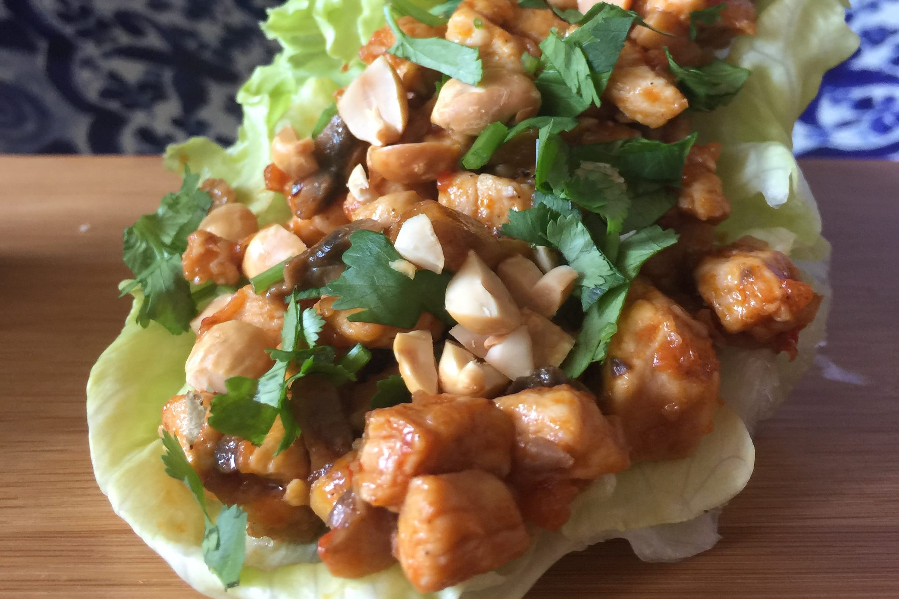
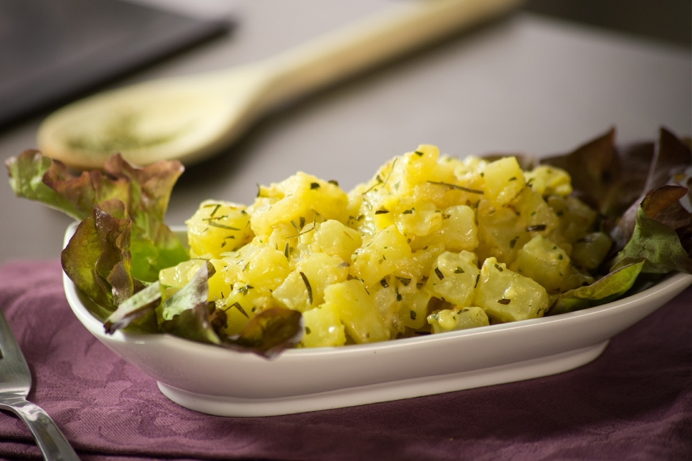

¡Bon Appetit!
¡Y disfrútalo!
Historial:
- ALBÓNDIGAS CAMPERAS
- TARTA DE CHOCOLATE BLANCO Y GELATINA DE PLÁTANO
- SIROPE DE CHOCOLATE CASERO
- CREMA DE CALABAZA CON LECHE DE COCO
- HUEVOS RELLENOS CON CHIPS DE VERDURAS CRUJIENTES
- ESPAGUETIS CON TERNERA Y SALSA DE VINO TINTO
- PASTEL DE VERDURAS
- CUPCAKES DE PLÁTANO
- BUÑUELOS DE PATATA
- ENSALADAS DE POLLO
TACOS DE LECHUGA CON POLLO
30 de Marzo, 2019

La receta de tacos de lechuga con pollo y salsa BBQ chipotle es muy sabrosa. Son deliciosos taquitos de pollo donde se sustituye la tortilla por hojas de lechuga, una receta muy fresca y saludable. Perfecta para un día caluroso.
Para prepararlo, en un Wok o sartén de hierro forjado, calentar el aceite. Cuando esté muy caliente añadir el jengibre, la cebolla, el pimiento y el ajo. Cuando empiece a dorar añadir el pollo. Extender el pollo sobre la superficie del sartén o wok para que dore y no se cueza con el jugo.
Mover el pollo distribuyéndolo hasta que esté dorado. Añadir los champiñones y remover hasta que se evapore su líquido y otra vez empiece a dorar la mezcla. Añadir 1/2 frasco de la Salsa BBQ Chipotle Cocina Mestiza. Dejar espesar un poco y apagar sartén.
Armar tacos: Rellenar las hojas de lechuga con la mezcla de pollo. Espolvorear cilantro y cacahuates picados y servir con el resto de la Salsa BBQ chipotle para añadir al gusto en la mesa.

MarthaLeroy: Es una receta muy fácil de preparar y muy saludable ante todo, me gusta porque todos los ingredientes siempre estan a la mano, y en términos nutricionales, esto es de lo mejor, espero que sigan compartiendo más recetas como esta, gracias.

PabloLongdon: Me he dicho a mi mismo que debería de buscar recetas de cocina fáciles de realizar, y he dado en el clavo!, esta receta me ha venido como el sol en un día nublado, en hora buena chicos, me ha encantado!.
ENSALADA DE PAPAS CON FINAS HIERBAS
27 de Marzo, 2019

No puedes dejar de probar esta deliciosa ensalada de papa a las finas hierbas, es la guarnición perfecta para cualquier plato fuerte. ¡Un deleite al paladar!
Para prepararlo, cocer las papas en agua con una pizca de sal. En una sartén caliente saltear la cebolla y las papas con las hierbas finas. Agregar la crema , el Knorr® Suiza Caldo de Pollo y mezclar muy bien. Dejar que de el primer hervor y retirar del fuego.

LisaFitson: Que receta más sencilla y prática, la verdad me ha gustado mucho, sigan compartiendo más recetas como esa, me ha facinado la forma tan sencilla en que preparase algo rico, nunca había resultado tan fácil.

LuisBarlon: Excelente receta, más que todo luce como pequeños tips de cocina, nuevas y sencillas maneras de preparar alimentos que todos tenemos en nuestra cocina, Justo ahora voy a preparar esa receta, gracias!.
MaryFer: Esa receta esta maravillosa, este sitio web me parece lo máximo, es tan útil, siempre estan creando nuevas recetas, sigan asi chicos. Les estaré visitando a menudo por aquí.